采访
Koha 的采访模块为图书馆提供处理同供货商之间的订单和管理文献购置预算的功能。
在这里： 更多 > 采访
设置采访模块
使用采访模块之前需要完成相关设置。
首先，设置您的 采访系统设置 和 采访管理 以匹配您的图书馆工作流。设置 EDI accounts 和 library EANs 之前，您需要 输入您的供货商。
在主采访页面您会看到您的图书馆经费列表。
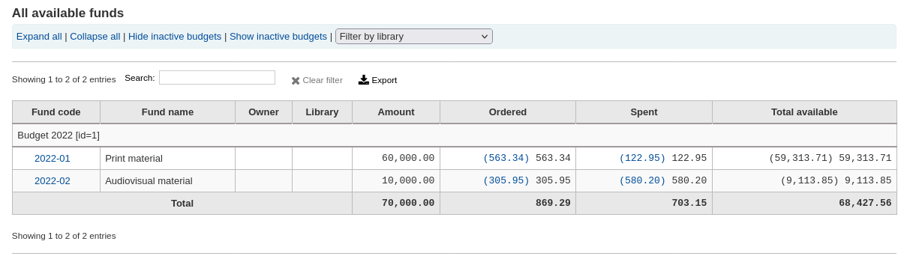
更多信息参阅 预算/经费追踪 部分。
供货商
在创建订单之前您需要至少有一个供货商。
添加供货商
添加一个供货商点击采访模块主页面的’新供货商’按钮。
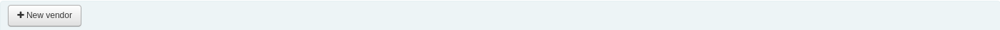
新建供货商表单分三部分：公司信息、联系方式和订购信息。
公司信息：关于供货商的基本信息
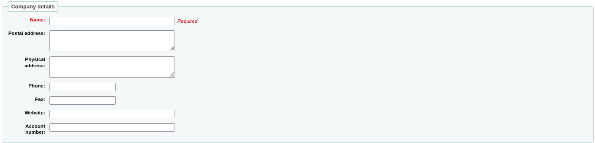
以上字段，只有供货商名字为必填项，其他信息主要用于生成索赔和发票信息等
联系人：供货商的联系人信息
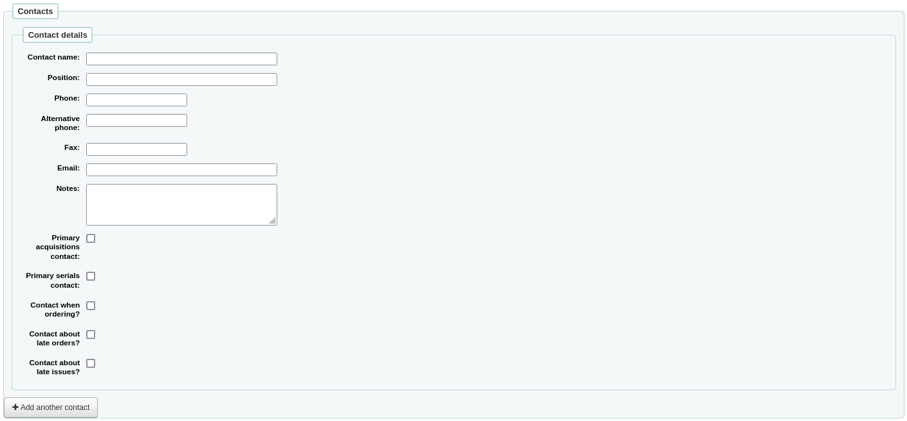
以上字段没有必填项，如果您需要在 Koha 内部调用联系人可以填写相关字段
您可以通过 ‘添加另一个联系人’ 按钮为每一个供货商添加更多联系人
订购信息：一般账单信息
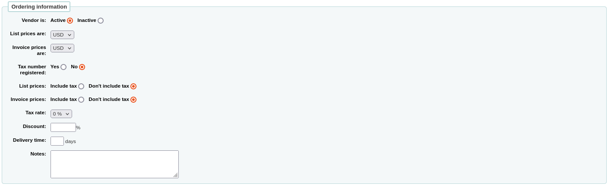
检索供货商
检索供货商既可以使用页面顶部的检索框
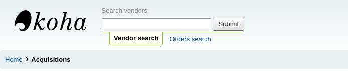
又可以使用采访主页面的 ‘管理订单’ 中的检索框。
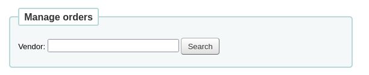
您可以检索供货商名字中的任意部分。
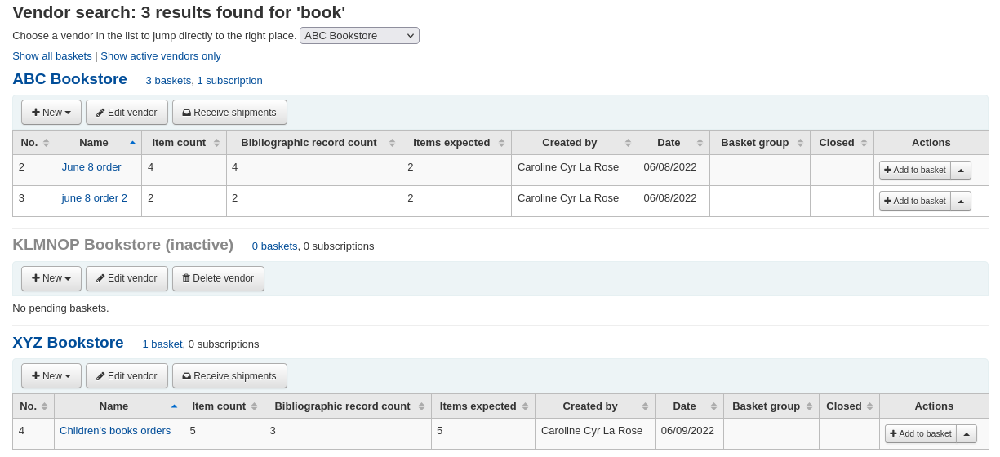
注解
空值检索会返回所有供货商。
如果您的供货商很多，您可以使用下拉菜单直接跳到对应结果。
By default, all vendors appear in the results, with inactive vendors in gray font and an ‘(inactive)’ note next to their name. You can click on ‘Show active vendors only’ to hide inactive vendors.
In the results, you can see all the currently open baskets. You can click on ‘Show all baskets’ to show closed baskets as well.
There are action buttons under each vendor:
‘New’ can be used to create a new basket, or add a new contract to that vendor.
‘Edit vendor’ is used to edit the vendor information.
‘Receive shipments’ will appear when a vendor has baskets with orders.
‘Delete vendor’ will appear when a vendor has no baskets.
查看供货商
To view a vendor’s information page, search for the vendor from the acquisitions home page.
From the results, click on the name of the vendor you want to view.

修改供货商信息
To make changes to a vendor search for the vendor from the acquisitions home page.
Click the ‘Edit vendor’ button on the results page
or on the vendor information page.
Vendor contracts
You can define contracts (with a start and end date) and attach them to a vendor. This is used so that at the end of the year you can see how much you spent on a specific contract with a vendor. In some places, contracts are set up with a minimum and maximum yearly amount.
Adding a contract
You can add a contract to a vendor by searching for the vendor, clicking the ‘New’ button and choosing the ‘Contract’ option.
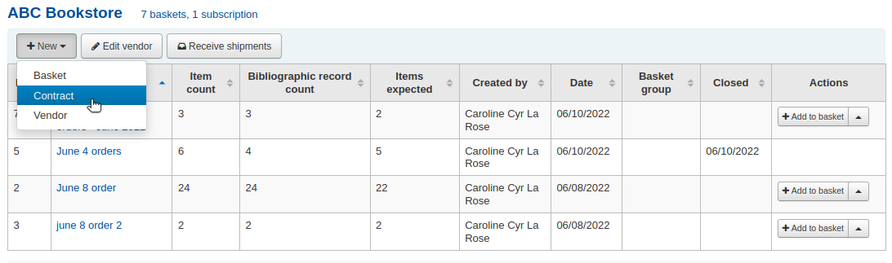
Alternatively, you can access the vendor page and click ‘New’ and choose ‘Contract’ from there.
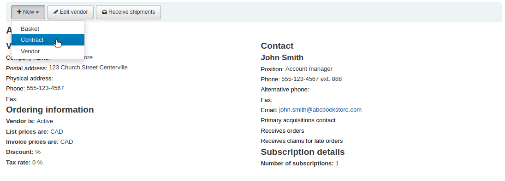
The contract form will ask for some very basic information about the contract
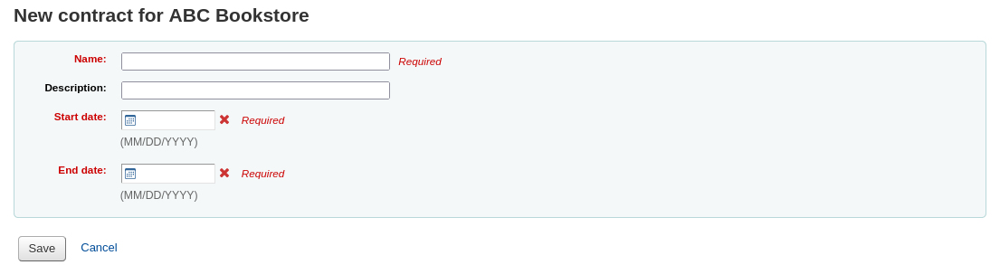
警告
You cannot enter a contract retrospectively. The end date must not be before today’s date.
Once the contract is saved it will appear on the vendor page.
It will also be an option when creating a basket.
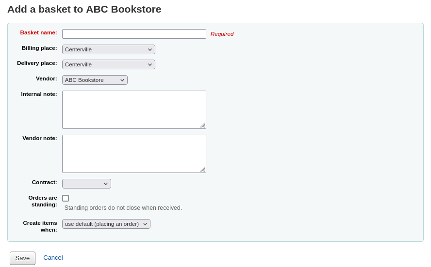
Managing purchase suggestions
You can create purchase suggestions via the staff interface either for the library or on the patron’s behalf from their record. Depending on your settings in the suggestion system preference, patrons may also be able to make purchase suggestions via the OPAC.
注解
You need to be logged in as a staff member with the suggestions_manage acquisitions permission in order to view and work with purchase suggestions.
If you have the suggestions_manage permission but not Acquisitions permissions you can access the suggestion management tool from Suggestions under the More menu in the header bar.
When a suggestion is waiting for library review, it will appear on the Acquisitions home page next to the vendor search. The suggestions for the branch where you are logged in will be separated from the rest of the suggestions. Clicking the library name will take you to the suggestion management tool.
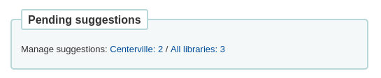
It will also appear on the main staff dashboard under the module labels.
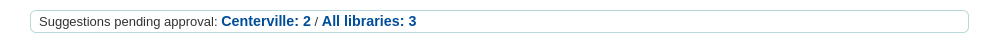
If there are no pending suggestions you can access the suggestion management tool by going to the ‘More’ menu and choosing ‘Suggestions’ or by clicking the ‘Manage suggestions’ link on the menu on the left of the Acquisitions module home page.
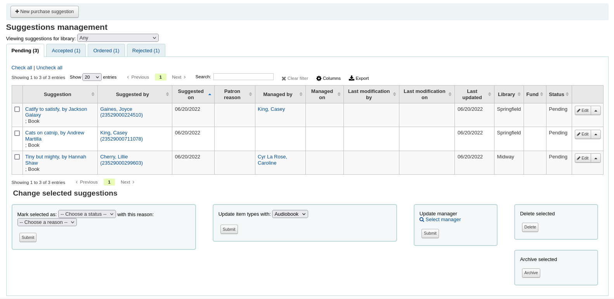
注解
You can customize the columns of this table in the ‘Table settings’ section of the Administration module (table id: suggestions).
Your suggestions will be sorted into several tabs: Pending, Accepted, Checked, Ordered and Rejected.
Pending: A ‘Pending’ suggestion is one that is awaiting action from the library.
Accepted: An ‘Accepted’ suggestion is one that you have marked as ‘Accepted’ using the form below the suggestions.
Checked: A ‘Checked’ suggestion is one that has been marked as ‘Checked’ using the form below the suggestions.
Ordered: An ‘Ordered’ suggestion is one that has been ordered using the From a purchase suggestion link in an order basket.
Rejected: A ‘Rejected’ suggestion is one that you have marked as ‘Rejected’ using the form below the list of suggestions.
注解
If your workflow requires more statuses for suggestion management, you can add more using the SUGGEST_STATUS authorized values category.
Each suggestion will show the name of the staff member who managed the suggestion as well as the date when it was managed.
Accepted and rejected suggestions will show the reason for accepting or rejecting it under ‘Status’.
For libraries with a lot of suggestions, there are filters on the left hand side of the Manage Suggestions page to assist in limiting the number of titles displayed on the screen.
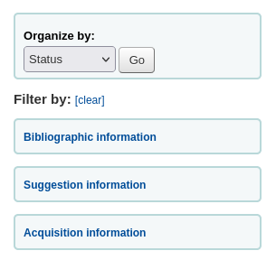
Clicking on the blue headings will expand the filtering options and clicking ‘[clear]’ will clear all filters and show all suggestions.
注解
The suggestions page will automatically be limited to suggestions for your library. To see information for all (or any other) libraries change the library in the ‘Viewing suggestions for library’ dropdown menu.
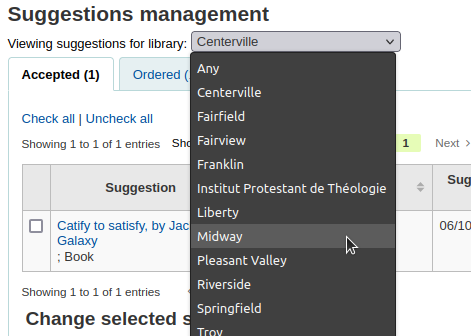
Approving or rejecting purchase suggestions
When changing the status of a purchase suggestion (pending, accepted, rejected, checked, or ordered), the suggestion will be moved to the matching tab. The status will also be updated on the patron’s account in the OPAC and an email notice will be sent to the patron using the template that matches the status you have chosen.
When reviewing ‘Pending’ suggestions check the boxes next to the purchase suggestions you want to approve or reject and then choose the status and reason for your selection in the ‘Change selected suggestions’ section below.
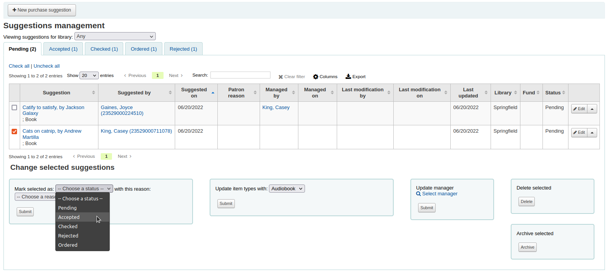
注解
If your workflow requires more statuses for suggestion management, you can add more using the SUGGEST_STATUS authorized values category.
Reasons for accepting and rejecting suggestions are defined by the SUGGEST authorized value category.
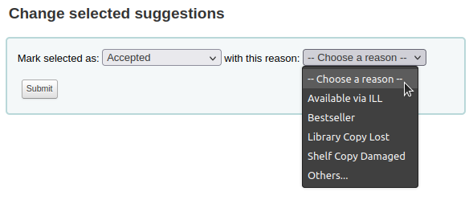
If you choose ‘Others…’ as your reason, you will be prompted to enter your reason in a text box. Clicking ‘Cancel’ to the right of the box will bring back the pull down menu with authorized reasons.
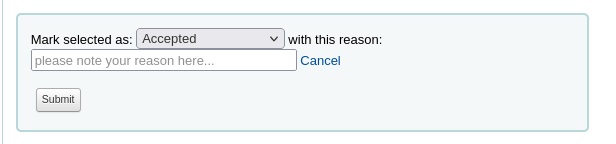
It is also possible to approve or reject suggestions one by one by clicking on the title of the suggestion to open a summary of the suggestion.
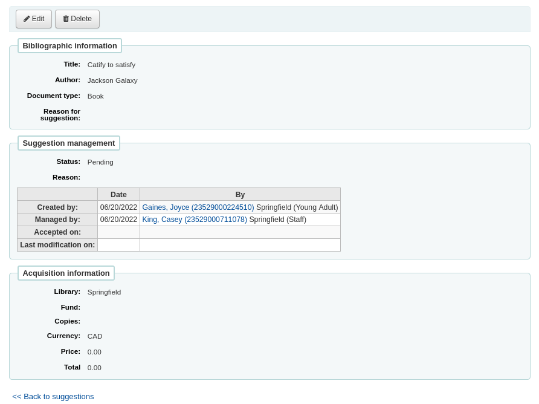
Click ‘edit’ at the top of the suggestion detail page to open the suggestion editing page.
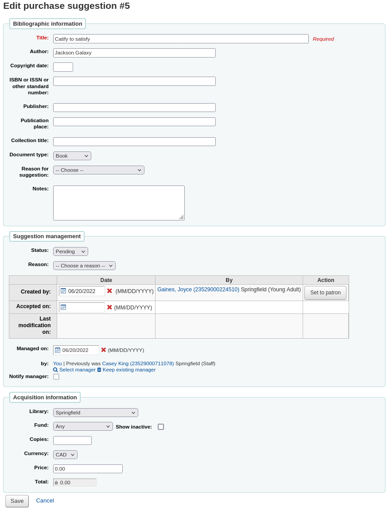
From there, change the status in the ‘Suggestion management’ section and click ‘Save’.
A suggestion’s status change will trigger a notice to be sent to the patron who made the suggestion. The notices can be edited in the Notices & slips tool.
The ‘Accepted’ status will trigger the ACCEPTED notice
The ‘Rejected’ status will trigger the REJECTED notice
The ‘Ordered’ status will trigger the ORDERED notice
注解
The ‘Ordered’ status will automatically be set when ordering from a suggestion and the corresponding notice will also be sent at that time.
Change to this status manually only if you don’t use the acquisitions module to enter your orders.
注解
If you add custom statuses in the SUGGEST_STATUS authorized values, you can add corresponding notices with the same names, taking care to choose the ‘Suggestions’ module when creating the new notices.
Editing purchase suggestions
Other than changing the status to accept or reject the purchase suggestions, you can also change various attributes while managing the suggestions.
Edits can be done in a batch by selecting the suggestions and choosing the new values in the ‘Change selected suggestions’ section at the bottom of the page.
You can change the item type of the suggestions by selecting them and choosing the new item type in the ‘Update item types with’ drop down menu.
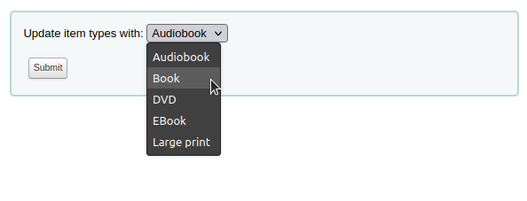
注解
The item types in this list are populated by the SUGGEST_FORMAT authorized value category.
You can also change the manager of the selected suggestions by clicking the ‘Select manager’ link and searching your user database. The new manager will receive the NOTIFY_MANAGER notice.
注解
Only users who have the ‘superlibrarian’ or the ‘suggestions_manage’ permission will show in the results.
It is also possible to edit suggestions one by one by clicking on the ‘Edit’ button to the right of the suggestion or by clicking on the title of the suggestion.
Clicking ‘edit’ at the top of the suggestion detail page will open a suggestion editing page.
From this form you can make edits to the suggestion (adding more details or updating incorrect information provided by the patron). You can also choose to accept or reject the suggestion on an individual basis.
In the ‘Bibliographic information’ section, you can add missing information, such as the ISBN, publisher, etc. or correct wrong information provided by the patron.
This information will be used to create a bibliographic record should you order this title from the suggestion.
In the ‘Suggestion management’ section, you can edit the status, add a reason for accepting or rejecting the suggestion, or adjust the dates if needed.
Choosing to mark a suggestion as ‘Pending’ will move it back to the ‘Pending’ tab.
The ‘Notify manager’ checkbox can be used to send a notice to the staff member who previously managed the suggestion to inform them the suggestion was modified. The notice sent is NOTIFY_MANAGER notice.
In the ‘Acquisitions information’ section, you can edit the fund, price, currency, etc.
Assigning the suggestion to a fund will trigger a notice to be sent to the fund owner to inform them that there is a suggestion ready for them to manage.
The notice_unprocessed_suggestions.pl cronjob is necessary to generate these notices.
The notice used is TO_PROCESS, it can be edited in the Notices & slips tool.
Archiving purchase suggestions
Once the suggestion has completed the acquisitions process, it is possible to archive them. If you have a lot of suggestions, and the page takes a long time to load, archiving old suggestions will improve the performance.
Select the suggestions you want to archive and click the ‘Archive’ button in the ‘Archive selected’ box.
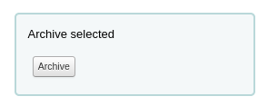
You can also archive the purchase suggestion by clicking the small arrow next to the ‘Edit’ button and choosing ‘Archive’.
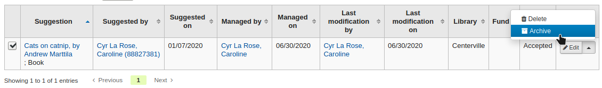
Archived suggestions will disappear from the list, but they can be viewed by checking the ‘Include archived’ checkbox in the ‘Suggestion information’ filters.
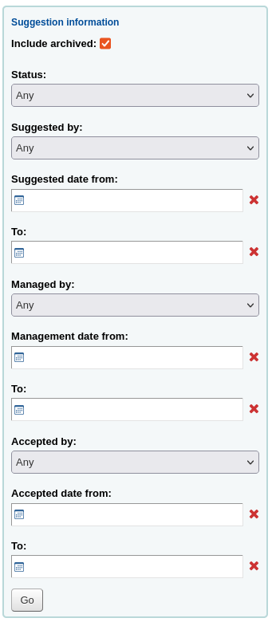
Archived suggestions will have a the mention ‘Archived’ under the title information when they are viewed.
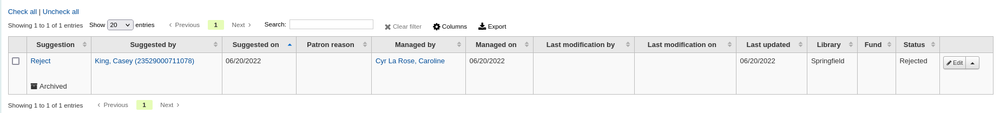
注解
Archived suggestions will disappear from the ‘Your purchase suggestions’ section of the patron’s file on the OPAC.
Deleting purchase suggestions
Once you no longer need the purchase suggestions, you can completely delete them from the system.
To delete purchase suggestions in batch, select the suggestions you want to delete completely and click the ‘Delete’ button in the the ‘Delete selected’ box.
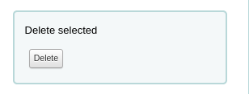
You can also delete a purchase suggestion by clicking the small arrow next to the ‘Edit’ button and choosing ‘Delete’.
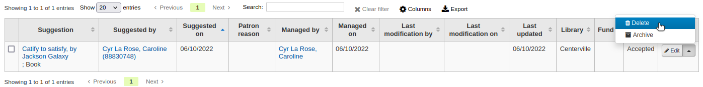
It is also possible to delete purchase suggestions by clicking on the title of the suggestion to access the suggestion detail page and clicking the ‘Delete’ button from there.
Old purchase suggestions can be automatically deleted using the purge_suggestions.pl cronjob.
Placing orders
To place an order you must first search for the vendor or bookseller and create a basket.
警告
If you are planning on using EDIFACT to submit your order you will need to first set up your library’s EDI accounts and EANs.
Creating a basket
注解
If you’re using EDI for ordering you will want to download your order record from your vendor before starting the process in Koha.
To create a basket you must first search for the vendor you’re ordering from. From the vendor search results, click the ‘New’ button and choose ‘Basket’.
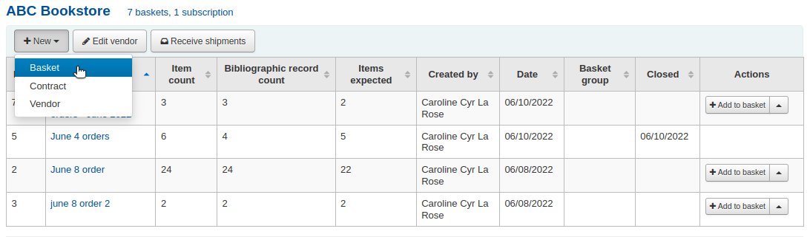
Alternatively, you can click on the vendor’s name to access the vendor page and click ‘New’ and choose ‘Basket’ from there.
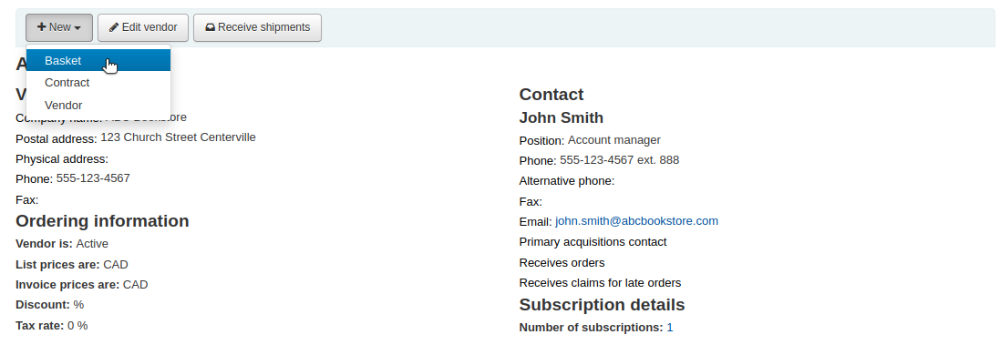
After clicking ‘New’ and ‘Basket’ you will be asked to enter some information about the order basket:
Give the basket a name that will help you identify it later
Enter in the billing place and delivery place (this will default the library you’re logged in at)
If you would like to change the vendor you’re ordering from you can use the Vendor pull down menu
The notes fields are optional and can contain any type of information
If you have added contracts to the vendor you’re ordering from, you will have an option to choose which contract you’re ordering these items under.
If you’re ordering standing items (items which arrive regularly), check the ‘Orders are standing’ box for this basket.
Note that one basket cannot contain both firm and standing orders.
You can choose to create items either upon placing the order, upon receiving the order, or upon cataloging the item. If you choose an option other than the default, it will apply only to this basket. The default is set by the AcqCreateItem system preference.
When finished, click ‘Save’.
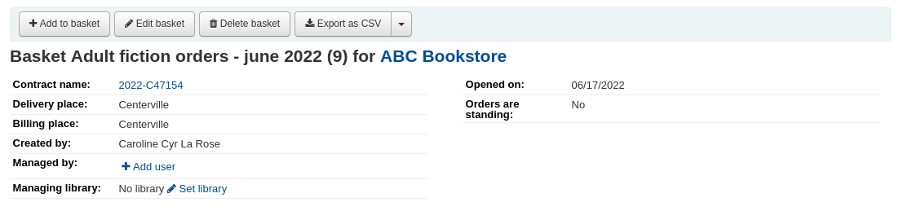
Adding materials to the basket
Once your basket is created, click on ‘Add to basket’ from the basket page.
To add to an existing basket click ‘Add to basket’ to the right of an existing basket.
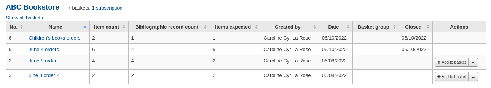
Several options for adding items to the order will be presented.
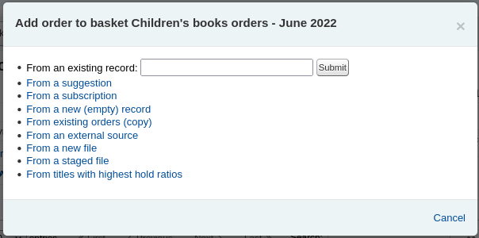
Order from an existing record
If you are ordering another copy of an existing item, you can simply search for the record in your system.
From the results, you can click ‘Add order’ to be brought to the order form.
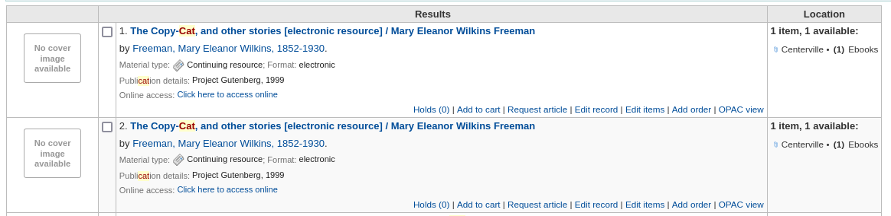
From the record’s detailed view, you can click on the ‘Add order’ button.
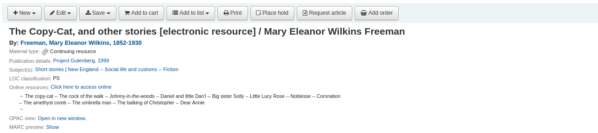
You will be brought to the order form
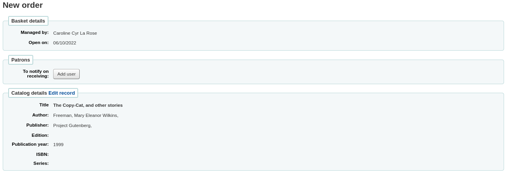
All of the details associated with the item will already be listed under ‘Catalog details.’
Fill out the rest of the order form, including patron notifications, items, and accounting details.
Order from a purchase suggestion
If you allow patrons to make purchase suggestions (learn more in the managing purchase suggestions section of this manual), you can place orders from those suggestions. In order to keep track of suggestions that have been ordered and received you must place the order using this link.
警告
Suggestions must be accepted before you can order them.
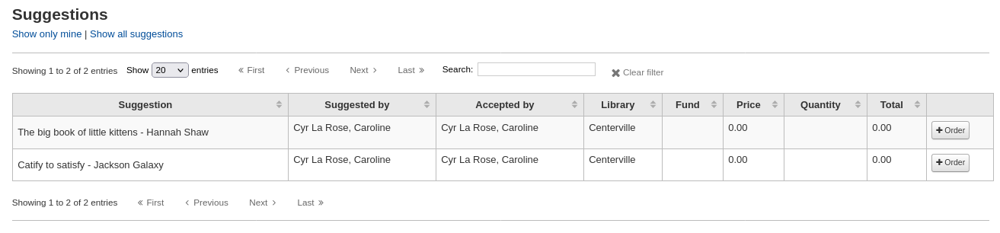
From the results, click ‘Order’ next to the item you want to order and you will be presented with the order form including a link to the suggestion
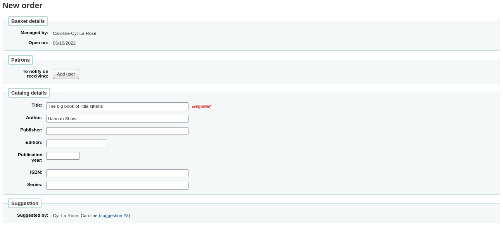
From this form you can make changes to the catalog details if necessary.
When the item appears in your basket it will include a link to the suggestion.
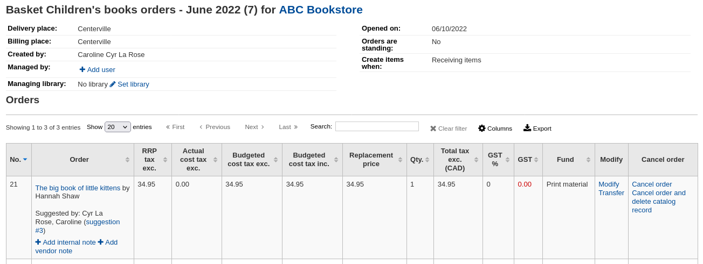
Orders added to the basket in this way will notify the patron via email that their suggestion has been ordered (with the ‘ORDERED’ notice in Tools > Notices & slips) and will update the patron’s ‘your purchase suggestions’ page in the OPAC.
Order from a serial subscription
If you are using the Serials module you can link your subscription order information to acquisitions by choosing to order ‘From a subscription’.
After clicking the order link you will be brought to a search page that will help you find your subscription
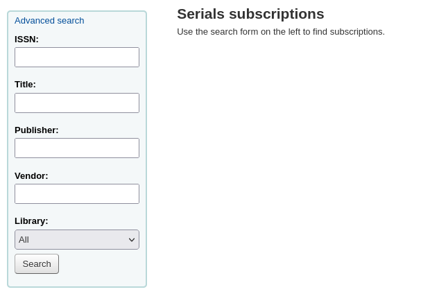
Your results will appear to the right of the form and each subscription will have an ‘Order’ link to the right
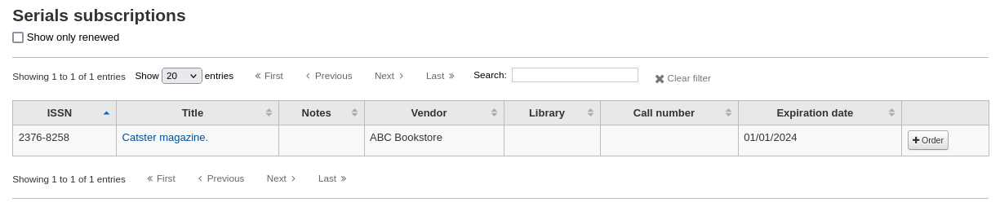
Clicking ‘Order’ will bring the subscription info in to the order form without an ‘Add item’ section since you are just ordering a subscription and an item is not needed
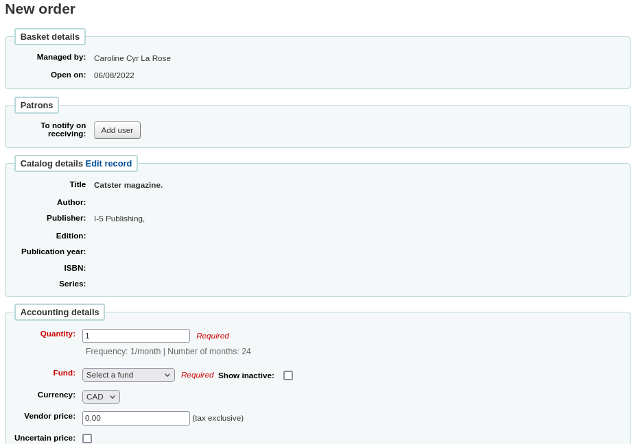
Order from a new (empty) record
To order from a record that can’t be found anywhere else, choose the ‘From a new (empty) record’ option.
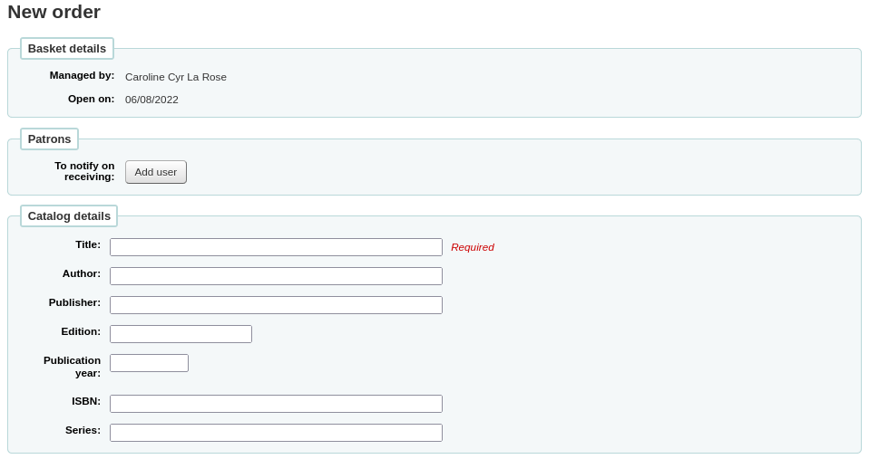
You will be presented with an empty form to fill in all of the necessary details about the item you are ordering.
注解
If the default form does not have the necessary bibliographic fields to place an order, enable the UseACQFrameworkForBiblioRecords preference which will allow the ACQ MARC framework to customize the display of fields when ordering.
Duplicate orders (order from existing orders)
You can duplicate an existing order line by choosing the ‘From existing orders (copy)’ option.
You will be presented with a search form to search your existing orders.
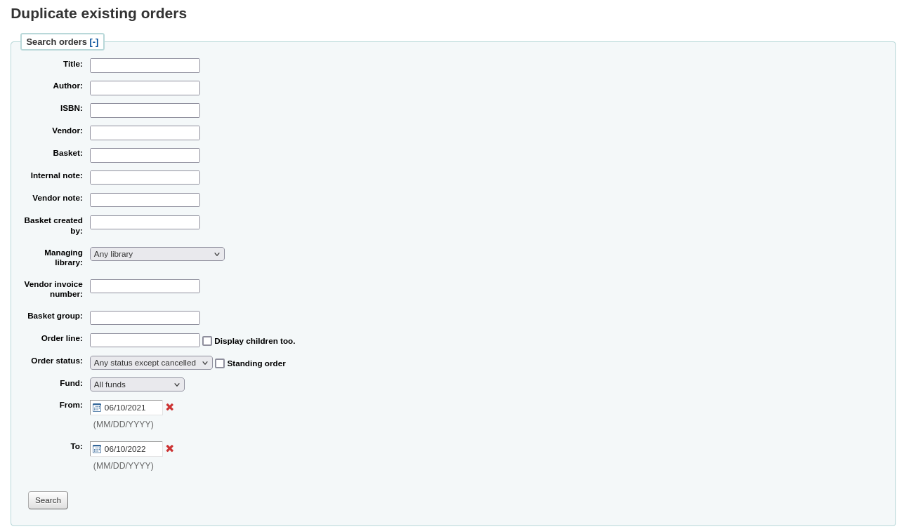
Check the boxes next to the order(s) you want to duplicate.
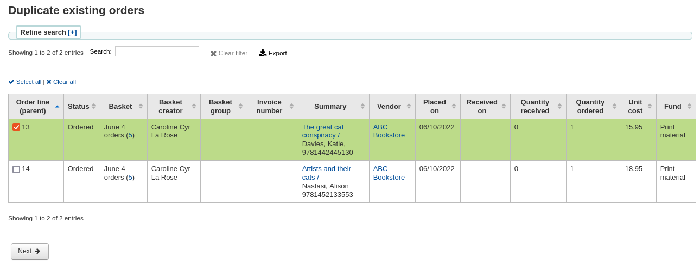
Click ‘Next’
Check the boxes next to the values to copy from the original order or choose new values.
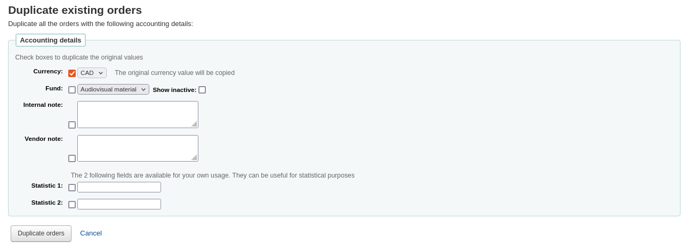
Click ‘Duplicate orders’
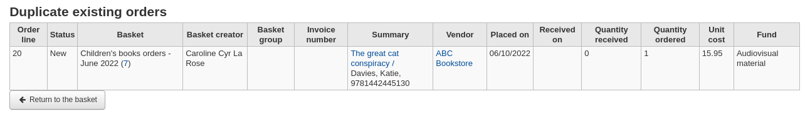
Click ‘Return to the basket’
Order from an external source
You can search other library catalogs for the record of an item to purchase using the ‘From an external source’ option. This will allow you to order from a MARC record found via a Z39.50 search.
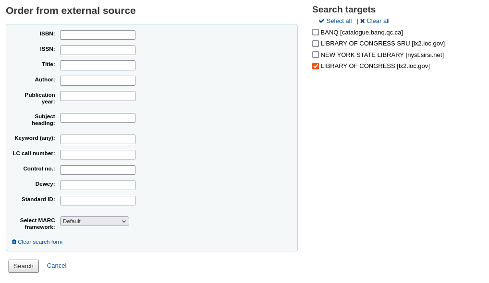
From the results, click anywhere in the row of the title you want to add to your basket and choose the ‘Order’ option.
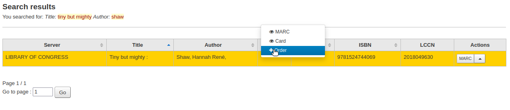
If the item you’re ordering from an external source looks like it might be a duplicate, Koha will warn you and give you options on how to proceed.
Use existing record: order another copy on the existing bibliographic record
Cancel and return to order: cancel the order
Create new record: create a new bibliographic record, while keeping the existing one also
Order from a new file
If your vendor sent you a record file (a .mrc file for example), you can add orders using the records in that file. Choose the ‘From a new file’ option.
注解
Note that you need the stage_marc_import tool permission in order to be able order from a new file.
You will be taken to the Stage MARC records for import tool. Stage your file as described in that section.
Once the files are staged, you can click on the ‘Add staged files to basket’ button.
Next to each title is a checkbox, check the items you would like to order, or choose ‘Select all’ at the top. Depending on your settings in the MarcFieldsToOrder system preference, Koha will populate the next screen with with the relevant quantity, price, fund, statistic 1, and statistic 2 found within the staged file.
In the ‘Item information’ tab you can enter information that will be added to every ordered item such as item type, collection code and not for loan status.
If no information is imported in the fund information from the MARC with the MarcFieldsToOrder system preference, the ‘Default accounting details’ tab can be used to apply values related to the accounting.
Click ‘Save’ to add to the basket
Order from a staged file
This option is the same as the previous one, but in this case, your file has already been staged. Whether you choose to ‘order from a new file’ or ‘order from a staged file’ will depend on your acquisitions workflow or your permissions.
Once you click on ‘From a staged file’, you will get a list of all the staged files in your system.
From the list of files you are presented with, click on the ‘Add orders’ button to add the records in the staged file to your order.
Next to each title is a checkbox, check the items you would like to order, or choose ‘Select all’ at the top. Depending on your settings in the MarcFieldsToOrder system preference, Koha will populate the next screen with with the relevant quantity, price, fund, statistic 1, and statistic 2 found within the staged file.
In the ‘Item information’ tab you can enter information that will be added to every ordered item such as item type, collection code and not for loan status.
If no information is imported in the fund information from the MARC with the MarcFieldsToOrder system preference, the ‘Default accounting details’ tab can be used to apply values related to the accounting.
Click ‘Save’ to add to the basket
Order from titles with highest hold ratios
The final option for ordering is to order from a list of titles with the highest hold ratios.
This option will take you to the holds ratio report where you can find items with a high hold ratio and order additional copies. Next to each title will be a button with the number of items to order, click that and it will add the item to your basket.
Setting up patron notifications
With any of the above ordering options you’re presented with an option to notify patrons of the new item when it’s received. The contents of that notification can be edited in the Notices & slips tool and will have the code of ACQ_NOTIF_ON_RECEIV. In the ‘Patrons’ section you will see an option to ‘Add user’. Click that button to add patrons who will be notified of the new issue.
Patron notification search
In the window that pops up search for the patrons you’d like to notify and click ‘Add’
Once you’re done you can close the window and you’ll see the list of patrons under the ‘Patrons’ section
Adding items to orders
After bringing in the record information (for all order methods except for the staged files), if your AcqCreateItem system preference is set to add an item when ordering you will enter the item information next. You need to fill out at least one item record and then click the ‘Add item’ button at the bottom left of the item form.
After clicking the ‘Add item’ button below the item record the item will appear above the form and then you can enter your next item the same way (if ordering more than one item).
If you are ordering several items, you can click on the ‘Add multiple items’ instead of adding them one by one. This will ask you how many items you want to add. Simply enter that number in the box and click on ‘Add’.
Adding accounting details to orders
Once you have entered the info about the item, you need to enter the Accounting information.
Quantity: enter the quantity of copies you want to order.
警告
If the item is created upon ordering, you will not be able to edit the quantity manually, you must add items to the order by clicking ‘Add item’ below the item form to add as many items as you’re ordering.
Fund: choose the fund that will be used to buy this title.
The list of funds is populated by the funds you have created in the Acquisitions administration area.
Currency: choose the currency of the price.
The currency pull down will have the currencies you set up in the Acquisitions administration area.
Vendor price: enter the price before any taxes or discounts are applied.
Uncertain price: if the price is uncertain, check the uncertain price box. You will be able to go back later to enter the right price.
注解
A basket with at least one uncertain price cannot be closed.
See the section Dealing with uncertain prices below to learn how to manage uncertain prices.
Tax rate: ff you are charged sales tax, choose the rate.
This field is populated by the TaxRates system preference.
Discount: enter the percentage discount you’re receiving on this order. Once you enter this, hit tab and Koha will populate the rest of the cost fields below.
Retail price: enter the recommended retail price (RRP), the price set by the publisher or the manufacturer as a recommendation to booksellers.
Replacement cost: enter the cost to replace the item. This is the price charged to the user when an item is declared lost (if the WhenLostChargeReplacementFee system preference is set to ‘Charge’).
Budgeted cost is the amount that will be removed from the ‘spent’ budget. Whether this number includes or excludes taxes will depend on the ‘List price’ setting for your vendor.
Total is the budgeted cost multiplied by the quantity of items ordered.
Actual cost: this field is usually left empty until receiving, when you can confirm the actual cost against the vendor’s packing slip or invoice.
Internal note: this will only appear in the acquisitions module and in the staff interface catalog, under the ‘Acquisitions details’ tab in the detailed record.
Vendor note: this will appear in the acquisitions module as well as on the order when exported as CSV.
If you added statistical categories when creating the fund, those values will appear in the two statistics fields.
Once you have filled in all of the fields click ‘Save’ to add the item to your basket. If your price goes over the amount available in the fund you will be presented with a confirmation.
The confirmation warning will allow you order past your fund amount if you so choose.
Once your order is entered you can search for it through acquisitions or view the information on the bibliographic record detail page in the staff interface, if the AcquisitionDetails system preference is set to ‘Display’, or view the information on the bibliographic record detail page in the OPAC, if the OPACAcquisitionDetails system preference is set to ‘Display’.
注解
You can customize the columns of this table in the ‘Table settings’ section of the Administration module (table id: acquisitiondetails-table).
Editing the basket
After an item is added to the basket you will be presented with a basket summary.
注解
You can customize the columns of this table in the ‘Table settings’ section of the Administration module (table id: orders).
From the basket, you can edit or remove the items that you have added.
Choosing to ‘Cancel the order’ will delete the order line but leave the record in the catalog.
Choosing to ‘Cancel order and delete catalog record’ removes both the order line and the record in the catalog.
The catalog record cannot always be deleted. You might see notes explaining why.
On the summary page, you also have the several option through the buttons at the top of the basket header.
Add to basket: add orders to the basket
Edit basket: edit the basket information, such as the name or the billing place.
Delete basket: if the basket is empty, you will get a simple confirmation message before deleting the basket. If the basket contains orders, you will get a confirmation message with several options.
Delete basket and orders: this will delete the basket, cancel the orders, refund the used funds, and delete the items (ordered or received).
Delete basket, orders, and records: this will delete all of the above plus the bibliographic records associated with the orders (except the ones which can’t be deleted because they have remaining items, orders or subscriptions attached).
Close basket: closing the basket will enable you to add it to a basket group (this is optional) and receive its items.
Export as CSV: this will create a CSV file with all your orders from this basket. You can add several CSV profiles options by going to the CSV profiles tool.
Create EDIFACT order: if you’re using EDI for your order you can click the ‘Create EDIFACT order’ button when you’re done to send the file to the vendor and close the basket.
E-mail order: this will send the order information to your contact for this vendor. Make sure your contact has a email address in the vendor profile.
Ordering (closing the basket)
Once you’re sure your basket is complete, you can click ‘Close this basket’ button to indicate that this basket is complete and has been sent to the vendor.
警告
You must close the basket to be able to receive items when they arrive. Only items in closed baskets will show as ready to receive.
If you have your BasketConfirmations system preference set to show a confirmation, you will be asked if you are sure about closing the basket.
When closing the basket you can choose to add the basket to a group for easy printing and retrieval. If you check the box to ‘Attach this basket to a new basket group with the same name’ you will be brought to the group list where you can export a PDF of the order.
警告
A basket with at least one item marked as ‘uncertain price’ will not be allowed to be closed.
See the section Dealing with uncertain prices below to learn how to manage uncertain prices.
Dealing with uncertain prices
警告
A basket with at least one item marked as ‘uncertain price’ will not be allowed to be closed.
Clicking the ‘Uncertain prices’ button will call up a list of items with uncertain prices to quick editing. From that list, you can quickly edit the items by entering new prices and quantities.
注解
The Uncertain prices page is independent of the basket. It is linked to the vendor so you will see all items on order with uncertain prices for that vendor.
Creating a basket group
A basket group is simply a group of baskets. In some libraries, several staff members create baskets, and, at the end of a period of time, someone groups them together to send to the vendor in bulk. Note that it is possible to have one basket in a basket group, or no basket groups at all if that’s the workflow used in your library.
注解
You cannot re-open a basket that is attached to a basket group. The re-open basket button will be grayed out.
To create a basket group, go to the vendor detail page and click on the ‘Basket groups’ tab on the left side.
Click on the ‘New basket group’ button.
Basket group name: this is the name the basket group will go by in Koha
Billing place: this is the billing address that will appear on the basket group order
Delivery place: pick a library where these orders should be sent, this will appear on the basket group order under delivery address You can also enter a different address
Delivery comment: this comment will appear on the basket group order
Close basket group: if you know that once you’re done with this basket group, you will not be modifying it anymore, you can check this box and the group will be closed upon saving
Add baskets to the group by clicking the ‘Add to group’ button on the right.
Click on ‘Save’ to finish creating your basket.
From there, you can export your order as a PDF file to send to your vendor.
注解
The content of the PDF file is not editable, but it is possible to change its language and formatting with the OrderPdfFormat system preference.
Searching for orders
At the top of the various Acquisition pages there is a quick search box where you can perform either a Vendor search or an Order search.
Using the Orders search you can search for items that have been ordered with the title or the vendor.
You can enter info in one or both fields and you can enter any part of the title or vendor name.

注解
You can customize the columns of this table in the ‘Table settings’ section of the Administration module (table id: histsearcht).
Clicking the plus sign to the right of the vendor search box will expand the search and allow you to search for additional fields. In the basket search, you can enter any part of the basket name or its number. In the invoice number search, you can enter a part of the invoice number.
Clicking Advanced search to the right of the search button will give you all of the order search options available.
Receiving orders
警告
You must close the basket to be able to receive items when they arrive. Only items in closed baskets will show as ready to receive.
Orders can be received from the vendor information page
or the vendor search results page
After clicking ‘Receive shipments’ you will be asked to enter a vendor invoice number, a shipment received date, a shipping cost and a fund to subtract that shipping amount from.
The receive page will list all items still on order with the vendor regardless of the basket the item is from.
警告
Only items from closed baskets will appear in the pending orders list.
注解
If you have a lot of orders, you can filter the orders using the ‘Search’ box just above the table, or the filter boxes at the top of each table column.
You could, for example, scan the ISBN of the book you are receiving in the filter box and the table will only show the corresponding orders.
Just make sure to clear the filter boxes when you’re done, otherwise, the other items won’t appear.
To receive a specific item, click the ‘Receive’ link to the right of the item.
Depending on when you chose to create the item (either in the AcqCreateItem system preference, or upon creating your basket), the form will look slightly different.
If you chose to create your item when placing the order, you will have your item information on the left side and financial information on the right side.
You can check the box next to the item to receive it, or fill out the ‘Quantity received’ field on the left side.
注解
You can choose to mark only part of the order as received if the vendor did not send your entire order by checking only the boxes next to the items on the left that you want to receive or by entering the right amount in the ‘Quantity received’ field.
You can edit the item if needed by clicking on the ‘Edit’ link. This will allow you to enter in accurate call numbers and barcodes if you’d like to do that at the point of receipt.
You can also alter the cost information (replacement cost and actual cost). The values you enter there will automatically populate the item record by filling in subfield v (Cost, replacement price) and subfield g (Cost, normal purchase price) on the item record after saving.
If you chose to create your item when receiving the order, you will see the item creation form on the left side and the financial information on the right side.
警告
You must fill out the item form and click on ‘Add item’ or ‘Add multiple items’ in order to receive the order. You will not be able to simply change the ‘Quantity received’ amount.
You can alter the cost information (replacement cost and actual cost). The values you enter there will automatically populate the item record by filling in subfield v (Cost, replacement price) and subfield g (Cost, normal purchase price) on the item record after saving.
Finally, if you chose to create your item when cataloging the record, you will only see the financial information on the right.
You can alter the cost information (replacement cost and actual cost).
注解
The financial information will not be transferred to the item if the item is created when cataloging.
Once you have made any changes necessary (to the order and/or items, click ‘Save’ to mark the item(s) as received.
注解
If you have your AcqItemSetSubfieldsWhenReceived system preference set to add or change values on received items those changes will take place after you hit ‘Save’.
When you’re finished receiving items you can navigate away from this page or click the ‘Finish receiving’ button at the bottom of the screen.
Received orders will have ‘(received)’ before the title in the basket view.
注解
When all the orders in a basket have been received, the basket will be removed from the list of baskets for that vendor. You can click ‘Show all baskets’ to view the inactive baskets.
Transferring orders
If the item is no longer available from this vendor you can transfer the order to another vendor’s basket by clicking the ‘Transfer’ link to the right of the title on the basket page or the receiving page. This will pop up a vendor search box.
From the results you can click ‘Choose’ to the right of the vendor you would like to reorder this item from.
You will then be presented with the open baskets for that vendor to choose from. To move the item simply click ‘Choose’ to the right of the basket you would like to add the item to.
Once you have chosen you will be presented with a confirmation message.
You will see transferred orders with the canceled orders when viewing the basket.
注解
Whilst it is possible to re-open your basket (unless it is part of a basket group, in which case the basket cannot be reopened), transfer one or more orders and re-close the basket, this is not recommended. This procedure will update the ‘basket closed’ date, which in turn will cause your ‘late order’ calculations to be incorrect.
It is preferable to transfer an order from the receiving page.
Cancelling orders
If the item cannot be found anywhere you can cancel the order by clicking ‘Cancel order’ or ‘Cancel order and delete catalog record’ to the far right on the basket page or the receiving page.
This will prompt you to enter your reason and confirm cancellation.
注解
The cancellation reasons drop-down menu are populated by the ORDER_CANCELLATION_REASON authorized values category. If there aren’t any authorized values in that category, it will be a free text field instead of a drop-down menu.
You will also see that the item is cancelled if you view the basket.
注解
Whilst it is possible to re-open your basket (unless it is part of a basket group, in which case the basket cannot be reopened), cancel one or more orders and re-close the basket, this is not recommended. This procedure will update the ‘basket closed’ date, which in turn will cause your ‘late order’ calculations to be incorrect.
It is preferable to cancel an order from the receiving page.
Invoices
When orders are received invoices are generated. Invoices can be searched by clicking on ‘Invoices’ in the left of the Acquisitions page.
After a search, the results will appear to the right of the search options.
At the bottom of the table, there is a button to merge selected invoices and a button to close selected invoices.
The ‘Actions’ button on the right allows various actions on a single invoice:
Details: show the full invoice
Close: close the invoice to indicate that the invoice is paid for
Delete: delete the invoice; this option is only available for invoices that have no items received on them
The detailed invoice page presents all the information about the invoice.
Invoice number: the invoice number entered upon receiving is editable here
Shipment date: date entered upon receiving is editable here
Billing date: enter the billing date of the invoice
Shipping cost: the shipping cost entered upon receiving is editable here
Shipping fund: the fund from which to subtract the shipping cost chosen upon receiving is editable here
Status: the status of the invoice, either open or closed; if closed, the closing date will also appear
Close: if the invoice is still open, it can be closed by checking this box
Reopen: if the invoice is closed, it can be reopened by checking this box
In the Adjustments section, you can add adjustments to your invoices by clicking ‘Add an adjustment’.
These adjustments can be for adjusting the price that is offset by rounding or adding a credit to the invoice, for example.
Amount: enter the amount of the adjustment (can be positive or negative)
Reason: choose a reason, if needed
注解
The reasons are populated by the ADJ_REASON authorized values category.
Note: enter a note, if needed
Fund: choose the fund from which the adjustment amount should be taken
Encumber while invoice open: if this is checked, the amount of the adjustment will be taken out of the fund immediately. If it is not checked, the amount will be subtracted only when the invoice is closed.
Click on ‘Update adjustments’ to save your adjustments.
If you need to change the adjustment afterwards, you can do so in the table and click on ‘Update adjustments’.
Attaching files to invoices
If you’re allowing the uploading of acquisitions files with the AcqEnableFiles system preference you will see the option to manage invoice files next to the link to ‘Go to receipt page’
To see or attach new files click the ‘Manage invoice files’ link
From here you can find a file to upload and see the files you have already attached.
Merging invoices
From the invoice search results you can also merge together two invoices or more, should you need to.
Simply click the checkbox to the left of the invoices you would like to merge and click the ‘Merge selected invoices’ button at the bottom of the page. You will be presented with a form to confirm the merge:
Click on the row of the invoice number you would like to keep and it will be highlighted in yellow. Enter any different billing information in the fields provided and click ‘Merge’. The invoices will become one.
Claims and late orders
The ‘Late orders’ link on the acquisitions main page leads to a report where all orders can be filtered to find the late orders.
Upon clicking on the link to ‘Late orders’ from the Acquisitions page you will be presented with a series of filter options on the left hand side. These filters will be applied only closed baskets.
Order date: this filter limits the results to orders from baskets closed more than this number of days ago. This defaults to 0, meaning all orders from closed baskets are shown in the list.
注解
The order date is the date the basket was closed.
Estimated delivery date from … to …: this filter limits the results to orders estimated to be delivered between two dates. The estimated delivery date is calculated as follows: order date (date the basket was closed) + delivery time entered when creating the vendor.
Vendor: this filter limits the results to orders to a specific vendor.
注解
The vendor drop-down menu only shows vendors with closed baskets.
Once you filter your orders to show you the things you consider to be late you will be presented with a list of these items.
注解
You can customize the columns of this table in the ‘Table settings’ section of the Administration module (table id: late_orders).
There are several options for claiming late orders.
If you have entered in an email address for a contact at the vendor’s in your system you can send them claim emails when an order is late.
Choose the notice to be sent in the ‘Claim using notice’ drop down menu
注解
The default notice is ‘Acquisition claim’ (code ACQCLAIM). It can be modified in the Notices & slips tool.
You can add different notices. When creating a new notice, choose ‘Claim acquisition’.
Check the box to the right of the late titles to claim
Click ‘Claim order’ at the bottom right of the list.
If the vendor does not have a contact with an email address, you can download the list of title to claim as a CSV file
Check the box to the right of the late titles to claim
Click ‘Export as CSV’ at the bottom right of the list
注解
The default CSV profile used is ‘Late orders’. You can modify it or add new ones in the CSV profiles tool.
If adding a new one, choose profile type: SQL and usage: Export late orders.
Budget/fund tracking
On the main acquisitions page there will be a table showing you all of your active funds and a breakdown of what has been ordered or spent against them.
注解
You can customize the columns of this table in the ‘Table settings’ section of the Administration module (table id: accounts).
注解
If the total line is confusing for the funds you have set up you can hide it by adding this code to the IntranetUserCSS preference.
#funds_total {display:none;}
The ‘Expand all’ link will show all funds and sub-funds.
The ‘Collapse all’ link will show only first level funds.
The ‘Hide inactive budgets’ will hide budgets that are not currently active (such as previous years’ budgets).
The ‘Show inactive budgets’ will show budgets that are not currently active (such as previous years’ budgets).
If you have several libraries in your system and have funds assigned to different libraries, you can filter the table to show only the funds for a specific library.
To see a history of all orders in a fund you can click on the linked amount and it will run a search for you.
EDI process
Previous sections explain all ordering options, this section pulls out the parts related to EDI or EDIFACT ordering to help those who are only using EDI for ordering.
注解
In order to use EDIFACT in Koha, the EDIFACT system preference must be enabled.
警告
Koha uses the EDIFACT standard (EDItEUR and BiC) not the X12 standard for electronic ordering.
Setting up EDI in Koha
Before you begin ordering using EDI you will need to take the following steps:
Ask your vendor/bookseller/jobber for their connection information
It might also be beneficial to ask for a few sample EDIFACT files from the vendor
Share with your vendor/bookseller/jobber your library codes, item type codes, fund codes, and any other codes or authorized values they might need for creating your MARC order records
Communicate with your support provider or the community about whether you will need a plugin based on your vendor’s answers
For example ByWater Solutions has published plugins for specific vendors here: https://github.com/bywatersolutions/koha-plugin-edifact-enhanced
Enter the vendor/bookseller/jobber in Acquisitions
Review your Acquisitions system preferences
Be sure to fill in the MarcFieldsToOrder system preference with values for order files (see the MARC order fields section below)
Enter your EDI Accounts
Enter your Library EANs
Turn on the EDI cron so that it can process files
EDI questions for vendors
You will need to gather the following information from your vendors before beginning the set up process in Koha.
EDI accounts
EDI accounts: This is the basic connection information for your vendor. It will be used to fill in the EDI accounts section.
Vendor: The name of the vendor
Description: A short description if additional explanation is needed (especially if you have multiple accounts for one vendor).
Transport: Does the vendor transmit EDI files via FTP, SFTP, or something else that requires special processing?
Options:
FTP
SFTP
FILE
Remote host: The URL or IP address of the FTP/SFTP server
Username: The username for the above server
Password: The password for the above server
Download directory: The path on the server that contains files for Koha to download and process
Upload directory: The path on the server that Koha will upload files to for your vendor to process
Qualifier: Who assigned the SAN below?
Options:
EAN International (14)
US SAN Agency (31B)
Assigned by supplier (91)
Assigned by buyer (92)
SAN: The identifier for the vendor
Standard: Which standard is used by the vendor, this will change how the EDI messages are interpreted
Options:
BiC
EDItEUR
Quotes enabled: (yes or no) Does this vendor support sending and receiving quotes via EDIFACT and do you want to send and receive quotes via EDIFACT?
Orders enabled: (yes or no) Does this vendor support sending and receiving orders via EDIFACT and do you want to send and receive orders via EDIFACT?
Invoices enabled: (yes or no) Does this vendor support sending and receiving invoices via EDIFACT and do you want to send and receive invoices via EDIFACT?
Responses enabled: (yes or no) Does this vendor support sending and receiving responses via EDIFACT and do you want to send and receive invoices via EDIFACT?
Automatic ordering: (yes or no) Check this box if you want quotes to automatically generate orders.
EAN
Each library using EDIFACT needs to specify a buyer identifier know as a SAN or EAN. This will fill in the Library EANs setting.
Library: Choose the library this EAN represents
Description: Add a description to this EAN, if needed
EAN: Enter the EAN
Qualifier: Choose who assigned the EAN above
Options:
EAN International (14)
US SAN Agency (31B)
Assigned by supplier (91)
Assigned by buyer (92)
MARC order fields or grid ordering
These values will fill in the MarcFieldsToOrder system preference.
price: MARC21 field that contains the item price
quantity: MARC21 field that contains the number of items for the given record
budget_code: MARC21 field that contains the Koha budget code to be debited
discount: MARC21 field the contains the discount as a percentage the the price will be discounted by
sort1: MARC21 field that will populate custom field sort1
sort2: MARC21 field that will populate custom field sort2
Ordering via EDI
The first step in ordering using EDI happens on the book vendor’s website. Each seller will use different language, but you will need to place your order on their site and then download the MARC order file. Some language that you might see included “basket”, “order”, “cart”, and/or “MARC order.” Once you have this MARC file downloaded to your computer you will want to log in to Koha and continue the process there.
In Acquisitions create a basket for the vendor you ordered from. Add your file to the basket by ordering from a new file.
From the confirmation screen you will see all of the data in the MARC file related to your order. If you are not seeing fields such as fund and quantity filled in then be sure to confirm that your MarcFieldsToOrder preference is set right.
Once you have added all of the items to the basket you can click the ‘Create EDIFACT order’ button.
Sending the EDIFACT order
This will generate a pending file in the EDIFACT messages in Koha.
The pending files will be processed by the EDI cron job and sent to your vendor.
Ordering via EDI with quote files
If you have Quote files enabled you can place the order on the bookseller’s website and a Quote file will be automatically generated and made available to be collected and loaded to Koha. You will see the file listed in the EDIFACT messages in Koha with a status of ‘Received’. The basket will have been created and records and items added to the basket.
Once you have checked that the basket is correct you can click the ‘Create EDIFACT order’ button. The process then completes as for Sending the EDIFACT order above.
EDI invoicing
When the book vendor is done processing your files they will send an invoice via EDI as well. The EDI cron job will grab invoices and mark items found in the invoice as received and update your funds without any need for manual intervention.
If you set the EdifactInvoiceImport preference to ‘Don’t’ you can load invoice files manually.
EDIFACT messages
A log of all messages sent and received via EDIFACT can be found under EDIFACT messages.